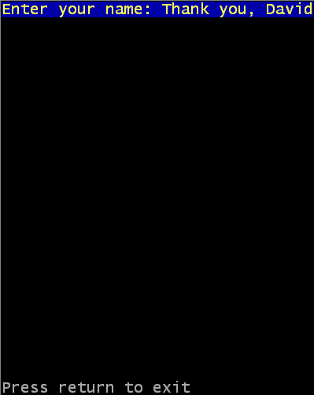

Interacting with the user: Changing the appearance of the display
This page shows you how to change the appearance of the console window, in terms
of changing what the window itself looks like, as well as making the text
you display in it look a little more pleasing. There are five commands to
be covered in this page, with one large example at the bottom showing all
of them in action.
The ConsoleTitle command
This command changes the text that appears in the title bar of the console
window. The command takes one parameter, the string with the text for the
title bar. It does not return any value. This command is useful if you want
to give the user some way to more easily identify the program running in that
console window, since most Operating Systems will display the text from the
title bar in whatever they use to switch between programs (for example, the
Start bar in Windows will show the title from the console when your program
is running).
The ConsoleCursor command
ConsoleCursor is a command which allows you to change the appearance of the
cursor which is displayed in the console window. This command has one parameter,
a number which represents the height to make the cursor. It does not return
any values.
The height of the cursor can be set to any value between 0 and 10. A height
of 0 means the cursor is invisible. A height between 1 to 10 sets the height
of the cursor directly, where 1 is the smallest cursor and 10 is the tallest.
The cursor is usually a flashing bar, and it can be found at the position
at which the next piece of text will be displayed. An example of why you
may want to change the look of the cursor could be that you are showing
different modes of how the program works (for example, you will typically
have experienced a text editor which uses different cursors for overtype
and insert modes). Or it may be that you simply prefer the look of
another type of cursor in your program (for example, no cursor).
Positioning text with the ConsoleLocate command
Up until this point the cursor position at which text was displayed in the
console window was determined by what you had previously printed. Using the
ConsoleLocate command you can set specific row and column positions at which
the next printing of text will take place. The command takes two parameters,
one for the row (0 being the topmost) and one for the column (0 being the
leftmost), in that order. It does not return a value.
Using this command gives you the possibility of creating any kind of layout
or display in a console window.
Changing the colours with the ConsoleColor command
The ConsoleColor allows you to change the text and background colors for all
future prints. It takes two parameters, both numeric, for the text colour
and the background colour (in that order). The command does not return any value. Using this
command, the ConsoleLocate command and clever use of what characters are printed
allows you to create some visually appealing displays in a console window.
The values which you can set and the colours they correspond to are shown below:
- Black (Dark dark grey?) - default background
- Dark blue
- Dark green
- Dark cyan
- Dark red
- Dark magenta
- Brown
- Light grey (Dark white?) - default foreground
- Dark grey
- Blue
- Green
- Cyan
- Red
- Magenta
- Yellow
- White
The ClearConsole command
This command removes any text from the console, and completely fills it with
the current background colour (as set by ConsoleColor, or black by default).
The cursor position is reset to the top-left of the console. This command
has no parameters and does not return any value.
Example of changing console appearance
The following example demonstrates the use of all of the above commands. You can
get the source from here.
If OpenConsole()
ConsoleTitle("PureBasic User Guide console appearance example")
PrintN("You will never see me!")
ClearConsole()
CnsoleColor(14, 1)
Print("Enter your name: ")
ConsoleColor(7, 0)
name$ = Input()
ConsoleColor(14, 1)
ConsoleLocate(17, 0)
Print("Thank you, "+name$)
ConsoleColor(7, 0)
ConsoleLocate(0, 24)
Print("Press return to exit")
Input()
CloseConsole()
EndIf
End

The line ConsoleTitle("PureBasic User Guide console appearance example")
changes the title of the console window as described in the paragraphs above.
You will see this when you run the program.
The next two lines:
PrintN("You will never see me!")
ClearConsole()demonstrate
the use of the ClearConsole command. Normally you would expect to see the
string which was displayed with the PrintN command, but this part of the
example proves that ClearConsole really does clear the console (since you
never see the string).
The use of the ConsoleColor command is shown in the next
few lines. The color is changed to yellow text on a blue background and the
prompt is displayed. The color is then changed back to white text on a
black background which causes the users response to appear in those colors.
After the user types a string the cursor is moved back to
where the end of the prompt is using the ConsoleLocate command. ConsoleColor
is then used to make the string appear as yellow text on a blue background
again. Notice that the text which is written over the string that the user
typed completely overwrites it (including the background).